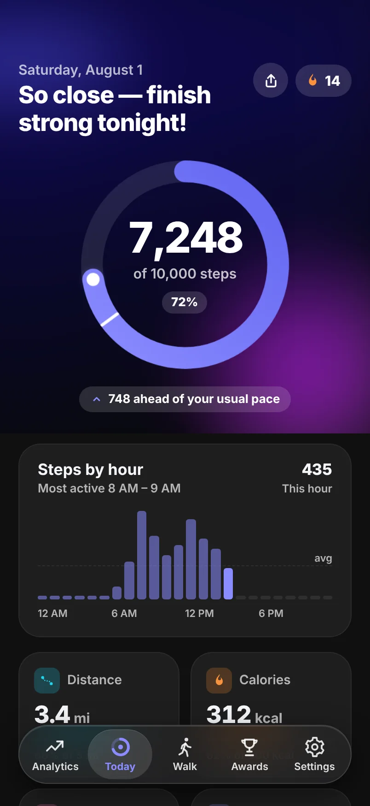
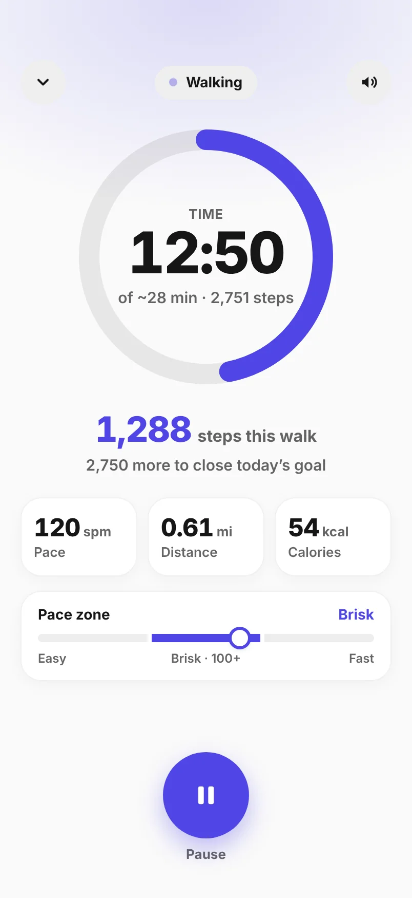
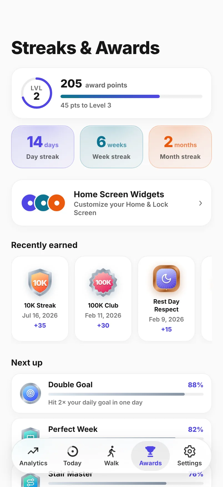
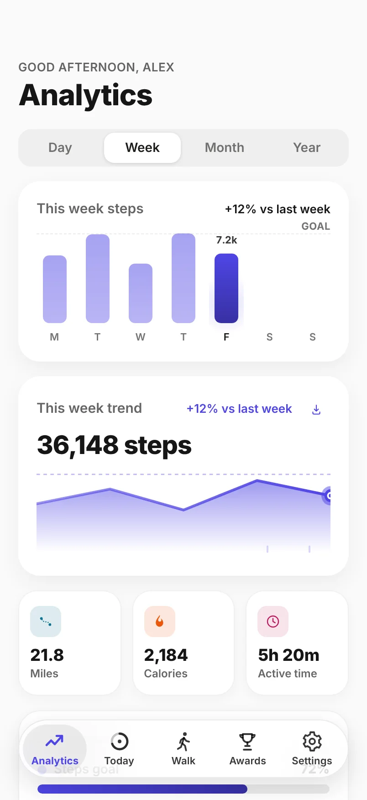
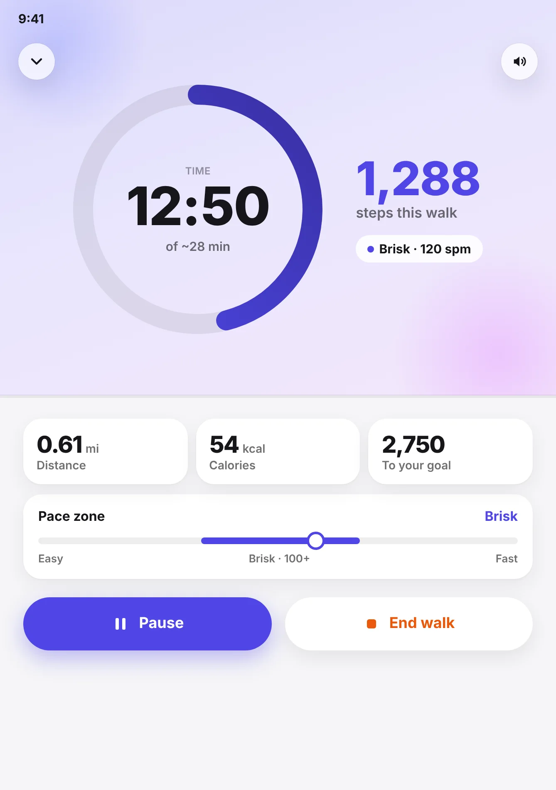

Walk a little more,
every day.
Step Tracker turns your steps into one clear daily goal, a guided walk when you need it, and streaks you’ll want to keep.

Private by default.
No sign-up
Open it and start. No account, no email, no password.
Stays on your iPhone
Your steps come from Apple Health and never leave your device.
No ads, no trackers
Nothing in the app watches you or sells your attention.
Everything you need to
walk more. Nothing you don’t.

See your day at a glance
One ring shows how close you are. The hourly chart shows when you moved, and you’ll see how far ahead or behind your usual pace you are.

Close your goal with a guided walk
Behind on steps? Tap Start. Step Tracker works out how long a walk closes your goal, then keeps time on your Lock Screen and in the Dynamic Island.

Streaks and medals worth keeping
Day, week and month streaks, plus collectible 3D medals for the moments that matter, like your first 10K day.

See how you’re really doing
Weeks, months and years side by side, so you can spot your best days and build on them.
Your goal, without opening the app.
12 Home Screen widgets and 8 for your Lock Screen, in Light, Dark and Tinted. Plus a Live Activity that follows every walk.

Prop it up.
Walk hands-free.
On iPhone Duo, fold it like a tiny laptop: your walk timer stays big and easy to read on the upright half, with Pause and End right below. Open flat, every screen spreads into two columns.
Do I need an account?
No. There’s no sign-up and no login. Open the app and you’re walking.
Where does my data go?
Nowhere. Step Tracker reads steps from Apple Health on your iPhone and keeps everything on the device. There are no ads or trackers.
Do I need an Apple Watch?
No. Your iPhone counts your steps on its own. If you wear an Apple Watch, those steps show up through Apple Health too.
How is it different from the Health app?
Health stores your data. Step Tracker helps you act on it: a daily goal, guided walks that close it, streaks, medals and widgets.
What does it cost?
Step Tracker is free to download, with no subscription and no in-app purchases.
Your next 1,000 steps
start today.
No sign-up. Your data stays on your iPhone.
Download on theApp Store